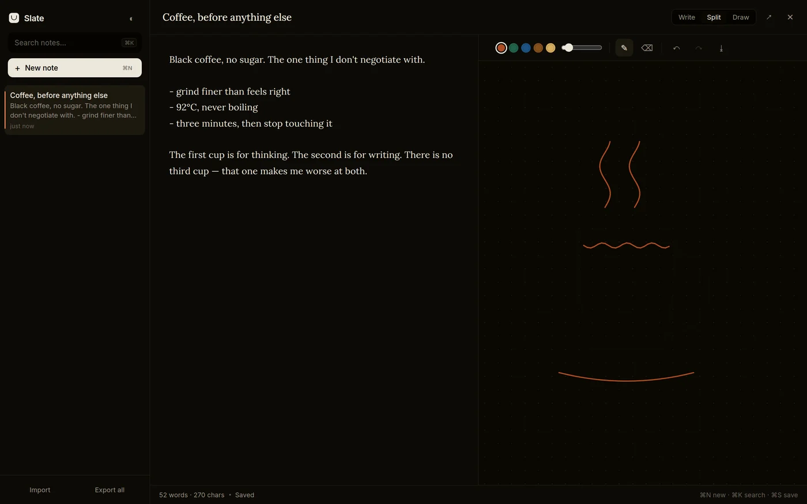
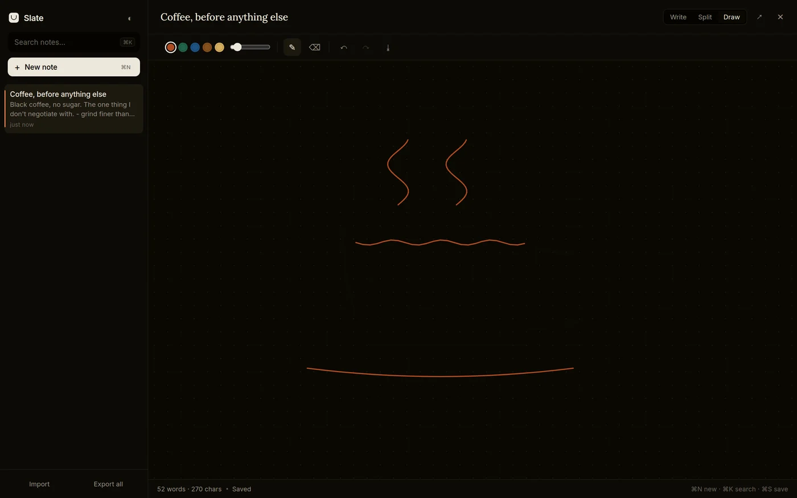

P/07 · Project · October 2026 · HTML + JavaScript
Slate
notes, and a place to draw
A quiet place to write, with a sketch pane beside the note. One HTML file. No account, no server, no build step — it opens from your disk and works offline.

01 / What it is
Words on the left. A pen on the right.
Most notes apps give you a text box and call it a day. Most drawing apps give you a canvas and no room to think. I wanted both, without opening two applications — so the note and the sketch sit side by side on one surface.
There are three views: Write when it's only words, Split when a sentence needs a diagram, Draw when the page should be blank and full width. The app remembers which one you left it in.
02 / The sketch pane
Strokes are vectors, not pixels.
A drawing is stored as points — position, pressure, ink, width — and replayed every time the canvas draws itself. That one decision does three things: the sketch stays sharp at any window size, it survives a resize instead of smearing, and it re-renders perfectly on a phone.
Pen, pressure, eraser, six inks, undo and redo. Export the drawing as a PNG when you want to send it somewhere else.
03 / Sharing
The link is the note.
Press share and Slate packs the title, the text and every stroke into the URL —
compressed with the browser's own CompressionStream, base64url-encoded,
stuck after the hash. No upload, no database, no third party. Open
the link anywhere and it unpacks into a note.
It's the same trick the original version of this project used, minus the library it needed to do it.
04 / Where your notes live
On your machine. Only there.
Notes are kept in the browser's local storage on the device you wrote them on. No analytics, no requests beyond the two font files, nothing leaving the machine. Export everything as JSON whenever you want a backup, and import it back.
The honest limit: local storage is per browser and per address, and clearing site data wipes it. That's the trade for having no account and no server — so export before you clear anything, and again before you move the app to a new address.

05 / Get started
Download one file. Open it.
There is nothing to install — no Node, no build, no package manager. Clone the repo and open the file in a browser, or keep it on a USB stick and open it from there.
git clone https://github.com/lukaslimals7/slate.git
cd slate
xdg-open index.html # Linux
open index.html # macOSOne file. No account. Your notes stay on your machine.